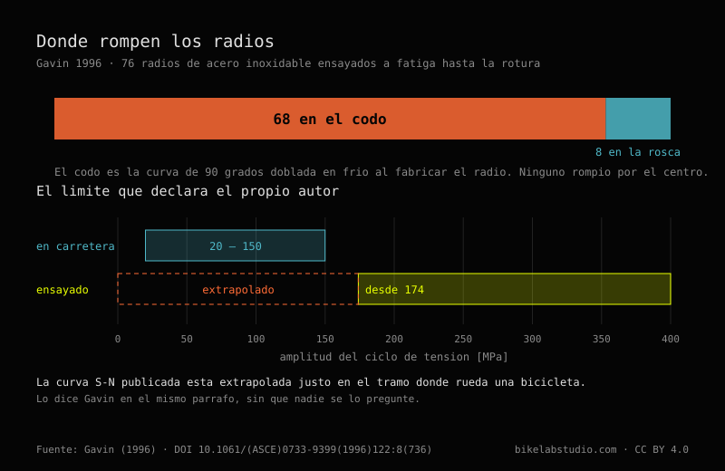

Tensión de radios y centrado de ruedas: lo que dicen las fuentes
Se leyeron en su documento original: ISO 4210-7:2023 completa —diez páginas, sin un solo valor en milímetros—, las tablas 6.1 y 6.2 de dos manuales técnicos de DT Swiss, la tesis de Ford (2018) y el paper de Gavin (1996) enteros, y tres guías de Park Tool. No se leyó ISO 4210-2:2023, que es donde vive el umbral de alabeo y es de pago: se cita a través de la parte 7 y se dice. La relación de tensión entre los dos lados de una rueda trasera no la publica nadie: aquí se deriva de la estática y se publica el código que la valida.
Un radio suena. Lo pulsas con la uña y da una nota. Si has centrado unas cuantas ruedas acabas afinando de oído sin proponértelo, y cuando uno desafina lo oyes antes de verlo en el comparador.
Eso es física de primer año —la frecuencia de una cuerda depende de cuánto la estires— y es también lo primero que aprende cualquiera que se ponga delante de un centrador. Lo que no aprende casi nadie es cuánta tensión tendría que haber ahí. Pregunta en diez talleres. Te van a dar diez respuestas. Y ocho de esos diez te van a decir, con la seguridad tranquila del que repite algo que oyó bien, que medio milímetro de alabeo es lo que manda la norma ISO.
No lo manda. Fui a mirarlo.
Antes de eso hay que entender qué sostiene qué, porque casi todo el mundo lo tiene al revés y no es culpa suya: la rueda engaña.
Un radio es un alambre. Tira. Nunca empuja: si lo comprimes se dobla y ya no hace nada. Así que cuando ves treinta y dos radios sosteniendo a alguien de ochenta kilos, lo que estás viendo no es a los de arriba colgando la bici. Es un aro que llegó de fábrica apretado por treinta y dos alambres que tiran todos hacia el buje a la vez. El aro vive comprimido. Es un anillo al que le sobra diámetro y no puede estirarse.
Te subes y la rueda se aplana un poco donde toca el suelo. Los radios de esa zona pierden tensión. Los de arriba no ganan casi nada. El peso no baja por los radios superiores: se transmite porque abajo se deja de tirar.
De ahí sale todo lo demás. Si la tensión de reposo es suficiente, los radios de abajo se aflojan un poco en cada vuelta y vuelven, y el ciclo que ven es pequeño. Si es insuficiente llegan a cero, quedan sueltos un instante y vuelven a cargar de golpe. Un radio no se parte por tirar mucho. Se parte por soltar y volver a tirar, vuelta tras vuelta, durante años.
Eso lo sabe con las manos cualquiera que haya rehecho una rueda floja. Lo que sigue es lo que pasa cuando le pides el número a las fuentes.
MÓDULO_01 // LA TABLA
DT Swiss lo publica. Y lo publica bien: en newton, separado por tipo de freno y por uso, en la tabla 6.1 de sus manuales técnicos —el de la serie Spline, documento WXD10000000861S, versión 2024.06, y el de Dicut, WXD10000000860S, de la misma fecha—. El encabezado tiene una precisión que se agradece: los valores son del lado más tensado de la rueda, no de la rueda entera.

| Rueda | Máximo | Mínimo | Media recomendada |
|---|---|---|---|
| Disco · delantera | 1200 N | 950 N | 1150 – 1000 N |
| Disco · trasera | 1300 N | 1050 N | 1250 – 1100 N |
| Llanta · delantera | 1100 N | 900 N | 1050 – 950 N |
| Llanta · trasera | 1300 N | 1050 N | 1250 – 1100 N |
| Hybrid (e-bike) · delantera | 1300 N | 1050 N | 1250 – 1100 N |
| Hybrid (e-bike) · trasera | 1400 N | 1150 N | 1350 – 1200 N |
La última columna no es un valor, es un intervalo, y así viene en el original: DT Swiss no recomienda un número sino una franja dentro de la ventana. La he dejado tal cual porque corregirla sería inventar una precisión que el fabricante no da.
La fila de abajo es la única cifra de fabricante que he conseguido encontrar que ponga número a lo que el motor de una eléctrica le exige a la rueda. Cien newton más de techo que la trasera de disco equivalente. Está en el manual de Spline y no está en el de Dicut, que es la gama de ruta y no lleva ruedas de e-bike.
Ahora, por qué no la has visto nunca. En el PDF esos números no dicen 1200. Dicen 1 200, con un espacio fino tipográfico en medio. Busca «1200» dentro de ese documento y no encuentras nada. Ni una coincidencia. Para leer la tabla tuve que bajarme el PDF y descomprimir sus flujos internos byte a byte, porque ni el buscador del visor los ve. Un dato de fabricante, gratuito, publicado, verificable. Y estructuralmente invisible para cualquier máquina que vaya a buscarlo. No está escondido: está publicado de una manera que impide que circule, que no es lo mismo pero se le parece bastante en el resultado.
MÓDULO_02 // MEDIO MILÍMETRO
ISO 4210-7:2023 es la parte de la norma que trata de ruedas y llantas. Diez páginas. Edición segunda, enero de 2023, comité ISO/TC 149/SC 1. Su alcance, en sus propias palabras, es «specifies wheel and rim test methods for ISO 4210-2».
Lo leí entero. Y aquí está lo que nadie cuenta: no contiene ni un solo valor en milímetros. Ninguno. Tiene fuerzas en newton, tiene duraciones en minutos, tiene dos figuras con un comparador montado —una para ciudad y trekking, otra para carretera— explicando cómo se mide la exactitud rotacional. Cómo se mide, no cuánto se admite.
Y dice dónde vive la cifra. En el apartado 4.4, al preparar un ensayo, manda controlar el alabeo lateral conforme a ISO 4210-2:2023, apartado 4.10.1. Ahí está la dirección exacta del número.
Esa parte 2 no la he leído. Cuesta dinero. El PDF de muestra viene cifrado con los permisos cerrados y no se fuerza un cifrado. Así que el número existe, tiene domicilio conocido, y casi nadie ha ido a esa dirección — yo tampoco. Eso es lo que hay, y prefiero decirlo así que fingir que la norma no dice nada.
Porque entonces el medio milímetro no sale de ISO. Sale de Park Tool, de su guía de centrado del 31 de marzo de 2021, y sale dicho con toda la honestidad del mundo:
«As a general guideline, try for 0.5 millimeters or less of lateral deviation.»
Una orientación general. Eso es lo que es. Y en la misma página dan un milímetro para el alabeo radial —el doble de margen— por una razón de taller que ojalá se repitiera tanto como el número: la rueda va a llevar un neumático encima, y los neumáticos no se fabrican con esa precisión.
En la tabla 6.2 de los dos manuales que ya cité, DT Swiss especifica para sus propias ruedas 0,3 mm de alabeo lateral en carbono y en aluminio soldado, 0,4 en aluminio con casquillo. El mismo valor para freno de llanta que para disco, cosa que descoloca a mucha gente que da por hecho que el disco perdona más.
Park Tool 0,5. DT Swiss 0,3. Casi el doble entre dos autoridades que nadie discute. Busqué esa comparación en español, inglés y portugués, y en la documentación de los dos fabricantes; no la encontré en ningún sitio. Puede estar en algún foro que no vi.
No se contradicen del todo, que quede claro: Park Tool escribe una guía para cualquier rueda que entre en un taller, DT Swiss una especificación de producto para las suyas. Pero el que cita «0,5» como si fuera universal está trabajando por encima de lo que el fabricante de esa rueda admite. Y el que lo cita como normativo está citando algo que no ha abierto.
MÓDULO_03 // TRESCIENTOS SETENTA
Sigo dentro de la norma un momento, porque hay algo que sí distingue y que en el taller no se dice nunca.
ISO 4210 conoce cuatro tipos de bicicleta: ciudad y trekking, joven adulto, montaña y carretera. Busqué «downhill» y «BMX» en el documento entero. Cero ocurrencias. No existen ahí.
Para cada uno de esos cuatro tipos fija una fuerza sobre el aro en el ensayo de resistencia estática. Tres de ellos, 250 N. La de montaña, 370. Un 48 % más.
Y fíjate en dos detalles del método, que valen más que el número. El primero: la fuerza va perpendicular al plano de la rueda. No es el peso del ciclista, que sería radial. Es un empujón lateral. El segundo: el ensayo mide deformación permanente — se anota la posición del aro, se carga un minuto, se descarga, se deja asentar otro minuto, y se vuelve a medir. Lo que se comprueba no es cuánto se dobla, sino si se queda doblada.
Hay un tercero, y es el que me hizo levantar la ceja. En una rueda trasera, la fuerza se aplica desde el lado del casete. Es decir, empujando hacia el lado no motriz, que es el que lleva menos tensión. Quien escribió esa norma sabía perfectamente por dónde cede una rueda.
Así que la norma sí distingue disciplinas. No con tolerancias: con la carga lateral que exige sobrevivir. Y el downhill, que es donde más lateral hay, se queda fuera del documento. Ese hueco lo cubre otro papel: DT Swiss clasifica el uso en cinco categorías ASTM, de carretera asfaltada a downhill y freeride, y publica un peso máximo de sistema por modelo de rueda. Dos documentos que se complementan y que nadie lee juntos.
MÓDULO_04 // FORD
Entre ciclistas circula que más tensión hace la rueda más rígida. Tiene sentido intuitivo: tensar suena a endurecer, y encima el radio tenso suena más agudo cuando lo pulsas, igual que una cuerda.
Entre montadores de ruedas circula lo contrario: que la tensión no afecta a la rigidez mientras ningún radio se afloje del todo bajo carga.
Ford midió, simuló y calculó, y escribió esto en la página cuatro de su tesis:
«Contrary to both popular belief and expert consensus, increasing spoke tension reduces the lateral stiffness of the wheel, which I demonstrate through theoretical calculations, finite-element simulations, and experiments.»
Subir la tensión reduce la rigidez lateral. Y en el apartado 2.6.2 enumera las dos creencias, la del ciclista y la del profesional, y las liquida juntas: «Both of these views are incorrect.»
El mecanismo vale más que el titular, y está escrito en una sola ecuación. La rigidez de cada modo de deformación lateral de la rueda es esto:
Los dos primeros términos suman: el primero es lo que aportan los radios, el segundo lo que aporta el aro por su rigidez a flexión y a torsión. El tercero resta, y lo que hay dentro de él es la tensión.
En cristiano: la tensión entra por dos puertas que empujan en direcciones contrarias. Por una, un radio tenso se resiste más a que lo muevas de lado —el efecto de la cuerda de guitarra, que es el que todo el mundo intuye—. Por la otra, esos treinta y dos radios tirando hacia el centro están comprimiendo el aro, y un aro comprimido es un anillo que quiere pandear. Piensa en una regla de plástico que empujas por las dos puntas: aguanta, aguanta, y de pronto salta hacia un lado. El aro está todo el rato en esa situación.

A tensión baja los dos efectos se cancelan casi exactamente, y por eso medir en ese rango no da nada: la rueda parece indiferente. A tensión suficientemente alta el término negativo empieza a mandar y la rigidez lateral baja. Y si sigues subiendo llegas a una tensión crítica donde la rigidez lateral se anula y la rueda pandea: se sale de su plano y no vuelve.
Lo que más me gustó de todo esto es a quién rescata. Damon Rinard había medido años antes que la rigidez de una rueda no cambiaba apreciablemente con la tensión, y ese resultado parecía dejar a Ford en evidencia. No lo deja: la figura 2.7 de la tesis incluye los datos de Rinard, reproducidos con su permiso, y encajan sin forzar nada. Rinard midió en el rango donde los dos efectos se cancelan. Tenía razón donde midió. Ford explica por qué ese rango existe y qué pasa cuando te sales.
Y ojo con lo que esto no dice, porque me veo venir la interpretación fácil. No dice que haya que tensar poco. La tensión alta sigue siendo lo único que impide que un radio llegue a cero bajo carga, que es lo que de verdad los rompe. Lo que dice es que la tensión no es una palanca de rigidez, y que el que aprieta un poco más «para que quede más firme» está pagando algo y no está comprando nada.
MÓDULO_05 // SETENTA Y SEIS RADIOS
Gavin instrumentó tres ruedas traseras de distinto radiado con galgas extensométricas —Micro-Measurements EA-13-23005-120, puente de Wheatstone con brazo de compensación térmica, exactitud de ±2 microdeformaciones— y se fue a rodar con ellas. Luego se llevó radios al laboratorio y los rompió a fatiga. Setenta y seis.
«In 68 spokes the failure occurred at the cold-worked elbow; in the remaining 8 spokes the failure occurred at the threads.»

Sesenta y ocho en el codo. El codo es esa curva de noventa grados que hace el radio para entrar en el buje, doblada en frío durante la fabricación, con el metal endurecido y con tensiones residuales de nacimiento. Gavin lo llama, tal cual, «this fatigue critical detail». Los ocho restantes rompieron en la rosca, donde los valles del fileteado concentran tensión. Ninguno por el medio.
Si se te rompe un radio, lo primero es mirar dónde se partió. Te está diciendo qué pasó.
Y aquí se cobra algo que dejé pasar al principio. Dije «un radio es un alambre» sin más, y un radio de gama alta no es un alambre de sección constante: es más fino por el centro que por los extremos. Un 2,0/1,8/2,0 tiene dos milímetros en las puntas y 1,8 en el tramo largo. Eso parece debilitarlo y hace justo lo contrario. La zona fina estira más para la misma carga, y al estirar más absorbe parte del ciclo que si no llegaría entero a los extremos. Se adelgaza el medio precisamente para descargar el codo y la rosca, que es donde rompen los setenta y seis.
Gavin publicó además su curva de fatiga —log S = −0,30 · log N + b, con b̄ = 4,12 y un coeficiente de variación de 0,017— y midió que en carretera los ciclos extremos rondan los 150 MPa, y que cada ciclo a ese nivel consume una millonésima de la vida a fatiga del radio. A 472 ciclos por kilómetro salen vidas larguísimas, siempre que la tensión sea correcta y uniforme.
Todo el mundo cita esos parámetros. Casi nadie cita el párrafo de al lado:
«The smallest stress cycle in the fatigue tests was 174 MPa, whereas the stress range from the road test data was 20 MPa to 150 MPa. Hence, the fatigue data was extrapolated to the low stress range.»
Ensayó de 174 MPa hacia arriba. La bicicleta rueda entre 20 y 150. La curva está extrapolada justo en el tramo donde se usa, y lo dice él mismo, sin que nadie se lo pregunte, explicando por qué: probar una sola muestra a 40 MPa habría tardado una eternidad. No invalida nada. Sitúa el dato. Repetir sus números callando eso es convertir la honestidad de un autor en una precisión que su trabajo no tiene.
MÓDULO_06 // SE GANA EN CURVA
Hay un tercer resultado de Gavin que se cuenta siempre a medias, y creo que ha hecho más daño que bien.
Bajo carga radial —el peso, sin más— la deformación de los radios es insensible al patrón de radiado. Dos, tres o cuatro cruces dan prácticamente lo mismo. De ahí ha salido la idea de que el radiado da igual y que discutir cruces es cosa de nostálgicos.
No es lo que dice el paper. Dice que el patrón tiene su mayor efecto bajo cargas laterales grandes, en una curva apurada por ejemplo, y que ahí las ruedas de radios largos deforman menos que las de radios cortos. Y remata en las conclusiones que las cargas laterales grandes pueden acortar la vida a fatiga «considerably».
O sea que la discusión de los cruces no se gana con el peso encima. Se gana en curva.
Y fíjate dónde nos deja eso. Ford dice que lo que la tensión reduce es la rigidez lateral. Gavin dice que el patrón importa sobre todo bajo carga lateral. Y el único número de la norma ISO que cambia según la disciplina —los 370 N de la de montaña— es lateral, aplicado perpendicular al plano y, en la trasera, desde el lado del casete. Tres fuentes, tres métodos, cuarenta años entre la primera y la última, y las tres apuntan a la misma dirección. Mientras tanto la conversación de taller va casi toda sobre el peso, que es radial, y sobre cuántos kilos aguanta la rueda. Estamos mirando el eje equivocado.
MÓDULO_07 // EL LADO FLOJO
Toda rueda trasera con casete tiene un lado flojo. La pletina del lado motriz está más cerca del centro para dejarle sitio a los piñones, así que sus radios salen con menos ángulo, y para que el aro quede centrado tienen que tirar más fuerte. El otro lado queda por debajo. Siempre.
La pregunta de taller es cuánto por debajo, y esa cifra no la publica nadie. La busqué en fabricantes de bujes, en fabricantes de aros y en literatura. No está.
Pero resulta que no hace falta que nadie la publique, porque sale de la estática. El aro solo puede estar centrado si las componentes laterales de los dos lados se anulan:
Y de ahí, despejando:
Como el radio es recto, el seno del ángulo es la distancia axial entre la pletina y el lecho del aro dividida por la longitud del radio — y eso es exacto, no una aproximación. Eso convierte la fórmula en algo que se mide con un pie de rey y sin desmontar nada:
Con la geometría de una trasera de disco corriente sale una relación de 0,52: el lado izquierdo al 52 % del derecho. Con ángulos algo distintos sube a 0,67, que es justo el orden de magnitud que se mide con tensiómetro en ruedas reales. La derivación reproduce lo que se observa.

Tres cosas que salen de ahí y que son útiles el lunes por la mañana.
La primera. Esa relación depende de n, de d y de L. De nada más. No depende de cómo montes la rueda, ni del calibre del radio, ni de cuánto aprietes. Así que «el lado izquierdo está flojo» no es un defecto que se arregle apretándolo. Si lo aprietas, descentras. Park Tool ya lo decía en prosa —«the opposing side will simply have lower tension when the centering, or dish, is correct»—; lo que faltaba era el número.
La segunda. Si con el techo de 1200 N de DT Swiss el lado derecho va al máximo, el izquierdo se queda entre 600 y 900 N según el buje. Ese es el rango real en el que trabaja medio juego de radios de tu rueda trasera, y es la mitad de lo que dice la tabla.
Y la tercera, que es la que más me gustó. Un aro offset —taladrado fuera del centro— mueve dD y dN sin tocar el buje. Tres milímetros de descentrado suben la relación de 0,52 a 0,66. Y con eso aparece algo que no había visto escrito: DT Swiss pide que el lado flojo no baje del 60 % del tenso, y esa misma rueda con aro simétrico se queda en 52 %. No llega. Cruza el 60 % con 1,76 mm de offset. El aro descentrado no es un refinamiento de fabricante: es lo que hace alcanzable su propia regla.
La derivación completa, con sus casos límite, sus derivadas analíticas contra diferencias finitas y su validación numérica, está publicada como código en el repositorio de BikeLab. No es un resultado experimental: es geometría, y cualquiera puede rehacerla o romperla.
MÓDULO_08 // EL SESENTA POR CIENTO
Hay una convicción firme en el sector: más peso, más radios. Treinta y dos para uso normal, treinta y seis si pesas, veinticuatro si buscas ligereza.
Busqué el ensayo. ScienceDirect, Springer, MDPI, Taylor & Francis, IOP, ASME, SAE. No está. Las marcas tampoco publican límites de peso por número de radios.
La explicación apareció en otro manual de DT Swiss, el de ASTM y peso de sistema, y me parece más interesante que la tabla que no existe. El fabricante no acota la rueda por número de radios. La acota por peso máximo del conjunto, modelo a modelo, y por categoría de uso. Y publica una regla de reparto que no he visto citada en ningún sitio:
«Max. system weight [kg] (rider+bike+equipment+luggage). The maximum permissible static wheel load is 60% of the maximum system weight.»
Ciclista más bici más equipaje, y de ahí sale la carga estática por rueda con el reparto declarado. Una XR 1700 Spline admite 110 kg de sistema. Una FR 1500 Classic, 140. Una HU 1900 Spline, que es de carga y motor, 180.
Que no exista la tabla peso-radios no es un agujero de la literatura. Es que la industria resolvió el problema por otro eje y el número de radios se quedó dentro, como variable de diseño, sin llegar nunca a la hoja que lee el usuario.
MÓDULO_09 // LO QUE NO HAY
Un artículo que solo cuenta lo que encontró está contando la mitad.

La precisión de los tensiómetros. Ni Park Tool ni DT Swiss publican el error de sus instrumentos. Park Tool describe el TM-1 con exactitud —flexiona el radio entre dos apoyos con un muelle calibrado y lo que lees es esa deflexión, que luego conviertes con una tabla que depende del material y del calibre— pero no hay un ±% en ninguna parte. El aparato con el que se toma la decisión no declara su incertidumbre. Es el hueco que más me molesta de todos.
El origen del ±20 %. Park Tool fija que una rueda cuyos radios estén todos dentro del ±20 % de la media tiene una tensión relativa aceptable. Lo usa medio mundo y a mí me parece razonable. No encontré el ensayo del que sale. Un porcentaje sin derivación es una convención, y da igual que sea buena: hay que llamarla por su nombre.
Curvas S-N comerciales. Ningún fabricante de radios publica la de sus modelos. Los datos de Gavin son de radios de 1,83 mm de mediados de los ochenta.
Sapim. Documentación técnica tras registro obligatorio. No creé cuenta.
Brandt. The Bicycle Wheel no tiene edición accesible por vía legítima. Todo lo que circula atribuido a ese libro se queda sin verificar hasta que haya un ejemplar delante.
Y falta el que más me interesaba. Busqué estudios sobre calidad de montaje de ruedas de fábrica —qué tensión y qué dispersión traen las ruedas nuevas al salir de la caja— y no hay ninguno. Tiene su lógica: el fabricante de ruedas no va a publicar que las suyas salen mal tensadas, y el fabricante de herramienta vende el tensiómetro, no los datos.
Mirando esa lista junta hay algo que no vi mientras la escribía. Un espacio tipográfico que hace ilegible una tabla. Una norma de pago cuyo PDF de muestra viene cifrado. Un fabricante que esconde sus fichas tras un registro. Un libro descatalogado sin edición legítima. Cuatro mecanismos distintos, sin relación entre ellos, y un solo resultado: información que existe, que es correcta, que alguien se tomó el trabajo de producir, y que no circula. Ninguno de los cuatro es censura. Los cuatro funcionan como si lo fueran.
Vale la pena mirar de dónde viene cada uno de los números de este artículo, porque no vienen del mismo sitio ni de la misma década. Jobst Brandt escribió su libro en 1981 desde el banco de trabajo. Henri Gavin pegó galgas a los radios de tres ruedas y publicó en la ASCE en 1996. Matthew Ford defendió una tesis de 137 páginas en Northwestern en 2018, con elementos finitos y un banco de ensayo. Park Tool redactó una guía de servicio en 2021. DT Swiss imprimió una ficha de producto en 2024. Cuarenta años, cinco oficios distintos, ninguna coordinación entre ellos. Cuando cinco fuentes así coinciden en algo, ese algo casi seguro es real: llegar al mismo sitio por cinco caminos que no se hablan no sale por casualidad. Cuando no coinciden, el desacuerdo señala que ahí hay un criterio y no una medida. Y un criterio se puede discutir.
Una rueda es un aro comprimido por alambres que solo tiran, y aguanta porque ninguno gana. Casi todo lo que se dice sobre ella se puede repartir en tres montones: lo que está medido, lo que es criterio de alguien con buen ojo, y lo que se repite porque sí. El primero es más pequeño de lo que parece.
MÓDULO_10 // LOS TRES MONTONES
Todo lo que ha salido aquí, clasificado. No por tema: por qué tipo de cosa es cada afirmación, que es lo que decide cuánto peso puede sostener.
| MEDIDO — HAY UN ENSAYO O UNA ESPECIFICACIÓN DETRÁS | |
| Tensión admisible del lado más tensado: 950–1200 N en disco delantera, 1050–1300 en trasera, 900–1100 en freno de llanta delantera, 1150–1400 en trasera de e-bike | DT Swiss, tabla 6.1 |
| Alabeo lateral 0,3 mm en carbono y aluminio soldado, 0,4 en aluminio con casquillo. Igual para disco que para llanta | DT Swiss, tabla 6.2 |
| El ensayo normativo aplica 370 N a la de montaña y 250 a las otras tres, perpendicular al plano, y en la trasera desde el lado del casete | ISO 4210-7:2023 |
| 68 de 76 radios rompen en el codo trabajado en frío; 8 en la rosca; ninguno por el medio | Gavin, 1996 |
| Curva de fatiga log S = −0,30 log N + b, y su rango de uso extrapolado | Gavin, 1996 |
| Subir la tensión reduce la rigidez lateral, y hay una tensión crítica donde la rueda pandea | Ford, 2018, §2.6.2 |
| El patrón de radiado es indiferente bajo carga radial y decisivo bajo carga lateral grande | Gavin, 1996 |
| La carga estática por rueda es el 60 % del peso máximo de sistema | DT Swiss, manual ASTM |
| DERIVADO — NO LO MIDE NADIE, PERO SE SIGUE DE LA ESTÁTICA | |
| TN/TD = (nD/nN)(sen αD/sen αN): la relación entre lados es geometría pura, no depende de cómo montes ni de cuánto aprietes | Equilibrio axial del aro |
| Con una trasera de disco corriente, el lado no motriz queda al 52 % del motriz; entre 600 y 900 N cuando el otro va a 1200 | Lo anterior, con geometría real |
| Un aro offset de 3 mm sube esa relación de 0,52 a 0,66 sin tocar el buje; el umbral del 60 % se cruza a 1,76 mm | Lo anterior |
| CRITERIO — ALGUIEN CON BUEN OJO LO FIJÓ, Y NO HAY ENSAYO PUBLICADO DETRÁS | |
| 0,5 mm de alabeo lateral, 1 mm de radial, como orientación de taller | Park Tool, 2021 |
| ±20 % de dispersión respecto a la media como tensión relativa aceptable | Park Tool, 2021 |
| 100–120 kgf como rango genérico de aro — con el neumático sin presión, condición que casi todo el mundo omite al citarlo | Park Tool, 2021 |
| SIN RESPALDO QUE YO HAYA ENCONTRADO | |
| La tabla peso del ciclista → número de radios | Siete bases científicas y los fabricantes |
| La precisión de un tensiómetro, en ±% | Park Tool y DT Swiss |
| Curvas S-N de radios comerciales | Los propios fabricantes |
| Qué tensión y qué dispersión traen las ruedas nuevas de fábrica | Cero resultados |
Son criterios buenos. Los uso. Pero un criterio no es una medición, y llamarlo por su nombre no le quita valor: le pone el suyo.
Y aparte, una que no encaja en ningún montón: el umbral normativo de alabeo existe, tiene dirección exacta —ISO 4210-2:2023, apartado 4.10.1— y no lo he leído. Ni yo ni, probablemente, la mayoría de los que lo citan.
MÓDULO_11 // RESPUESTAS DIRECTAS
Cinco preguntas que llegan solas a esta página. Cada respuesta se sostiene sola y lleva su fuente dentro, para poder citarse sin arrastrar el resto del estudio.
¿Cuánta tensión debe tener un radio?
DT Swiss especifica, para el lado más tensado de la rueda, entre 950 y 1 200 N en una delantera de disco, entre 1 050 y 1 300 en una trasera, y entre 1 150 y 1 400 en la trasera de una e-bike. Son valores del lado más tensado: el otro lado queda por debajo por geometría, no por defecto de montaje.
¿La norma ISO fija medio milímetro de alabeo?
No. ISO 4210-7:2023 tiene diez páginas, describe cómo se mide la exactitud rotacional y no contiene ningún valor en milímetros. Remite el umbral a ISO 4210-2:2023, apartado 4.10.1, que es un documento de pago. El 0,5 mm que se cita habitualmente es una orientación de taller de Park Tool; DT Swiss especifica 0,3 mm para sus propias ruedas.
¿Más tensión hace la rueda más rígida?
No. Ford demostró en 2018, con cálculo, elementos finitos y ensayo, que subir la tensión reduce la rigidez lateral. La tensión aporta rigidez por un lado y comprime el aro por otro, y a tensión alta domina el segundo efecto. La tensión sirve para impedir que un radio llegue a cero bajo carga, no para endurecer la rueda.
¿Por qué el lado izquierdo de mi rueda trasera está más flojo?
Por geometría, y no se arregla apretándolo. El casete obliga a acercar la pletina motriz al centro, así que sus radios salen con menos ángulo y necesitan más tensión para centrar el aro. La relación entre lados vale (n_D/n_N)·(sen α_D/sen α_N) y solo depende de la geometría del buje, del aro y del número de radios. Apretar el lado flojo descentra la rueda.
¿Dónde se rompen los radios?
En el codo. De 76 radios llevados a rotura por fatiga por Gavin en 1996, 68 rompieron en el codo trabajado en frío y 8 en la rosca. Ninguno por la zona central. La localización de la rotura indica la causa: el codo apunta a tensión baja o mal asentamiento, la rosca a concentración o sobreapriete.
De este estudio sale una versión de divulgación: los mismos números y las mismas fuentes, contados para quien está delante del centrador y no necesita la derivación.
LEER_CUÁNTA_TENSIÓN_LLEVA_UN_RADIO_➔Ravello Joo, C. E. (2026). Tensión de radios y centrado de ruedas: lo que dicen las fuentes. BikeLab Studio, Trujillo, Perú. ORCID 0009-0007-5631-7436. https://www.bikelabstudio.com/articles/tension-radios-centrado-ruedas-es.html
Fuentes
Todas las cifras se leyeron en su documento de origen. Los PDF de fabricante se descargaron y se descomprimieron para sacarles el texto; los papers se leyeron enteros. Ninguna cifra viene de un resumen, de un fragmento de buscador ni de memoria. Donde no pude abrir una fuente, lo digo. Del texto de la norma ISO no se reproduce nada más que su alcance, que ISO publica libremente en su catálogo; los apartados se citan por número.